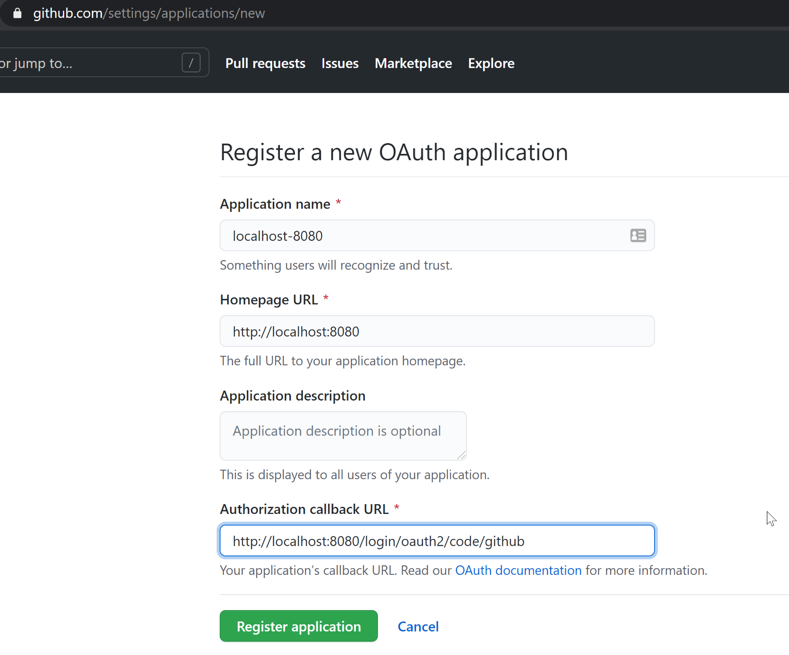

Spring Security
This guide describes the configuration of the Spring implementation of Apache Isis' Authenticator SPI.
It does not however provide any implementation of Authorizor SPI. You will therefore need to configure an alternative implementation, eg the Bypass implementation (to disable authorisation checks completely), or use the SecMan implementation.
Dependency Management
If your application inherits from the Apache Isis starter app (org.apache.isis.app:isis-app-starter-parent) then that will define the version automatically:
<parent>
<groupId>org.apache.isis.app</groupId>
<artifactId>isis-app-starter-parent</artifactId>
<version>2.0.0-M6</version>
<relativePath/>
</parent>Alternatively, import the core BOM. This is usually done in the top-level parent pom of your application:
<dependencyManagement>
<dependencies>
<dependency>
<groupId>org.apache.isis.core</groupId>
<artifactId>isis-core</artifactId>
<version>2.0.0-M6</version>
<scope>import</scope>
<type>pom</type>
</dependency>
</dependencies>
</dependencyManagement>Dependency
In the webapp module of your application, add the following dependency:
<dependencies>
<dependency>
<groupId>org.apache.isis.security</groupId>
<artifactId>isis-security-spring</artifactId>
</dependency>
</dependencies>Update AppManifest
In your application’s AppManifest (top-level Spring @Configuration used to bootstrap the app), import the IsisModuleSecuritySpring module and remove any other IsisModuleSecurityXxx modules.
Also, as this module provides no implementation of the Authorizor SPI, instead you will need some an alternative implementation, such as the Bypass implementation. (Note: this will in effect disable authorisation checks).
@Configuration
@Import({
...
IsisModuleSecuritySpring.class, (1)
AuthorizorBypass.class, (2)
...
})
public class AppManifest {
}| 1 | make sure that no other IsisModuleSecurityXxx module is imported. |
| 2 | or some other implementation of Authorizor. |
Design
The module brings in a transitive dependency to org.springframework.boot:spring-boot-starter-security:
<dependency>
<groupId>org.springframework.boot</groupId>
<artifactId>spring-boot-starter-security</artifactId>
</dependency>This enables security by default, and should then be adjusted as required to enable access. See the Spring documentation for details on how to do this, for example:
-
Baeldung article on
spring-boot-starter-security -
Tutorialspoint tutorial on
spring-boot-starter-security
The module itself configures a filter that is installed at the end of Spring Security’s filter chain. It uses the SecurityContextHolder to obtain the current authentication:
val springAuthentication = SecurityContextHolder.getContext().getAuthentication();
if(springAuthentication==null
|| !springAuthentication.isAuthenticated()) {
httpServletResponse.setStatus(HttpServletResponse.SC_UNAUTHORIZED);
return; // not authenticated
}For an authenticated user the org.apache.isis.viewer.wicket.roles.USER role — as required by Web UI (Wicket viewer) — is automatically added to the list of roles.
Walk-through : In-memory
Using Spring Security we can configure your app with various authentication providers. In this section we describe how to modify the HelloWorld starter app to use an in-memory authenticator.
These changes have been applied to the origin/jdo-spring-security-inmemory branch.
|
Code Changes
First, we need an implementation of WebSecurityConfigurerAdapter to setup the inmemory authenticator:
@Configuration
@EnableWebSecurity
public class SecurityConfig extends WebSecurityConfigurerAdapter
{
@Override
protected void configure(AuthenticationManagerBuilder auth) throws Exception {
auth.inMemoryAuthentication()
.withUser("sven")
.password(passwordEncoder().encode("pass"))
.roles("USER"); (1)
;
}
@Bean
public PasswordEncoder passwordEncoder() {
return new BCryptPasswordEncoder();
}
}| 1 | at least one role must be assigned to each user. |
Next, we configure the necessary components (including SecurityConfig, above).
As discussed above, we need to reference Apache Isis' Spring security module and also an implementation of Authorizor SPI, eg the Bypass implementation:
@Configuration
@Import({
...
IsisModuleSecuritySpring.class,
AuthorizorBypass.class,
SecurityConfig.class,
...
})
public class AppManifest {
}Code Patch
In the current release of Apache Isis (2.0.0-M6), there is an issue with its SpringSecurityFilter; it does not recognise UserDetails as a valid authenticated principal.
We therefore (for now) need to patch in our own replacement.
package org.apache.isis.security.spring.webmodule;
//...
public class SpringSecurityFilter implements Filter {
@Autowired
private InteractionFactory isisInteractionFactory;
@Override
public void doFilter(
final ServletRequest servletRequest,
final ServletResponse servletResponse,
final FilterChain filterChain) throws IOException, ServletException {
HttpServletResponse httpServletResponse = (HttpServletResponse) servletResponse;
org.springframework.security.core.Authentication springAuthentication = SecurityContextHolder.getContext().getAuthentication();
if(springAuthentication==null
|| !springAuthentication.isAuthenticated()) {
httpServletResponse.setStatus(HttpServletResponse.SC_UNAUTHORIZED);
return; // not authenticated
}
String principalIdentity;
Object principal = springAuthentication.getPrincipal();
if (principal instanceof UserDetails) {
final UserDetails user = (UserDetails) principal;
principalIdentity = user.getUsername();
} else {
httpServletResponse.setStatus(HttpServletResponse.SC_UNAUTHORIZED);
return; // unknown principal type, not handled
}
UserMemento user = UserMemento.ofNameAndRoleNames(principalIdentity,
Stream.of("org.apache.isis.viewer.wicket.roles.USER"));
SimpleAuthentication authentication = SimpleAuthentication.validOf(user);
authentication.setType(Authentication.Type.EXTERNAL);
isisInteractionFactory.runAuthenticated(
authentication,
()->{
filterChain.doFilter(servletRequest, servletResponse);
});
}
}Tidying up
Finally, (and optionally), the swagger/REST API is not configured for spring security, so we replace the index.html page with one to redirect straight to the Wicket Viewer:
<!DOCTYPE html PUBLIC "-//W3C//DTD HTML 4.01 Transitional//EN" "http://www.w3.org/TR/html4/loose.dtd">
<html xmlns:th="http://www.thymeleaf.org">
<head>
<meta http-equiv="Content-Type" content="text/html; charset=ISO-8859-1">
<meta http-equiv="refresh" content="0;url=/wicket/" />
</head>
<body>
<div id="wrapper">
<!-- we just redirect immediately, because swagger/restful API not configured to use spring security -->
</div>
</body>
</html>Walk-through : OAuth2
Using Spring Security we can configure your app with various authentication providers. In this section we describe how to modify the HelloWorld starter app to use github as an OAuth2 provider. The steps here are based on this Spring tutorial.
These changes have been applied to the origin/jdo-spring-security-oauth2 branch.
|
Code Changes
First, we add in the OAuth2 client dependency:
<dependency>
<groupId>org.springframework.boot</groupId>
<artifactId>spring-boot-starter-oauth2-client</artifactId>
<exclusions>
<exclusion>
<groupId>org.springframework.boot</groupId> (1)
<artifactId>spring-boot-starter-logging</artifactId>
</exclusion>
</exclusions>
</dependency>| 1 | excluded to avoid log4j2 ←→ slf4j bidirectional dependency |
Next: the OAuth2 integration provided by Spring (seemingly) forwards onto an "/login" endpoint immediately after the user has logged into github, but with an authenticated principal. We therefore use a controller to simply forward directly onto the Wicket Viewer:
-
create this page to redirect:
templates/redirect-immediately.html<!DOCTYPE html PUBLIC "-//W3C//DTD HTML 4.01 Transitional//EN" "http://www.w3.org/TR/html4/loose.dtd"> <html xmlns:th="http://www.thymeleaf.org"> <head> <meta http-equiv="Content-Type" content="text/html; charset=ISO-8859-1"> <meta http-equiv="refresh" content="0;url=/wicket/" /> </head> <body> <div id="wrapper"> </div> </body> </html> -
define this controller for
/login:LoginController.java@Controller @RequestMapping({"/login"}) public class LoginController { @RequestMapping( produces = {"text/html"} ) public String login(HttpServletRequest request, HttpServletResponse response) { return "redirect-immediately"; } }
Next, we configure the necessary components (including LoginController, above).
As discussed above, we need to reference Apache Isis' Spring security module and also an implementation of Authorizor SPI, eg the Bypass implementation:
@Configuration
@Import({
...
IsisModuleSecuritySpring.class,
AuthorizorBypass.class,
LoginController.class,
...
})
public class AppManifest {
}Code Patch
In the current release of Apache Isis (2.0.0-M6), there is an issue with its SpringSecurityFilter.
We therefore (for now) need to patch in our own replacement.
package org.apache.isis.security.spring.webmodule;
//...
public class SpringSecurityFilter implements Filter {
@Autowired
private InteractionFactory isisInteractionFactory;
@Override
public void doFilter(
final ServletRequest servletRequest,
final ServletResponse servletResponse,
final FilterChain filterChain) throws IOException, ServletException {
HttpServletResponse httpServletResponse = (HttpServletResponse) servletResponse;
org.springframework.security.core.Authentication springAuthentication = SecurityContextHolder.getContext().getAuthentication();
if(springAuthentication==null
|| !springAuthentication.isAuthenticated()) {
httpServletResponse.setStatus(HttpServletResponse.SC_UNAUTHORIZED);
return; // not authenticated
}
Object principal = springAuthentication.getPrincipal();
if (principal instanceof OAuth2User) {
OAuth2User oAuth2User = (OAuth2User) principal;
final Object login = oAuth2User.getAttributes().get("login");
principalIdentity = login instanceof String ? (String)login : oAuth2User.getName();
} else {
httpServletResponse.setStatus(HttpServletResponse.SC_UNAUTHORIZED);
return; // unknown principal type, not handled
}
UserMemento user = UserMemento.ofNameAndRoleNames(principalIdentity,
Stream.of("org.apache.isis.viewer.wicket.roles.USER"));
SimpleAuthentication authentication = SimpleAuthentication.validOf(user);
authentication.setType(Authentication.Type.EXTERNAL);
isisInteractionFactory.runAuthenticated(
authentication,
()->{
filterChain.doFilter(servletRequest, servletResponse);
});
}
}Tidying up
Finally, (and optionally), the swagger/REST API is not configured for oauth2, so we replace the index.html page with one to redirect straight to the Wicket Viewer:
<!DOCTYPE html PUBLIC "-//W3C//DTD HTML 4.01 Transitional//EN" "http://www.w3.org/TR/html4/loose.dtd">
<html xmlns:th="http://www.thymeleaf.org">
<head>
<meta http-equiv="Content-Type" content="text/html; charset=ISO-8859-1">
<meta http-equiv="refresh" content="0;url=/wicket/" />
</head>
<body>
<div id="wrapper">
<!-- we just redirect immediately, because swagger/restful API not configured to use spring security -->
</div>
</body>
</html>Configuration
We are now ready to configure the app. As described in the this Spring tutorial:
-
register the app on github:
 -
obtain the clientId and create a new client secret:

-
update the configuration:
config/application-github-example.propertiesspring.security.oauth2.client.registration.github.clientId=XXXX spring.security.oauth2.client.registration.github.clientSecret=XXXXXXXX
Run the application
You should now be able to run the application, setting the "github-example" profile using this JVM argument:
-Dspring.profiles.active=github-example
If you are already signed into github:

then you should be logged in directly; the app will show your user name:

On the other hand, if you are not signed in then you will be redirected to the github login page:

If you have 2FA enabled, then this also works:

and then, once again, you will be redirected to the app and it will show your user name:
Finally, if you log out then Spring will show a page to allow you to trigger the login process: